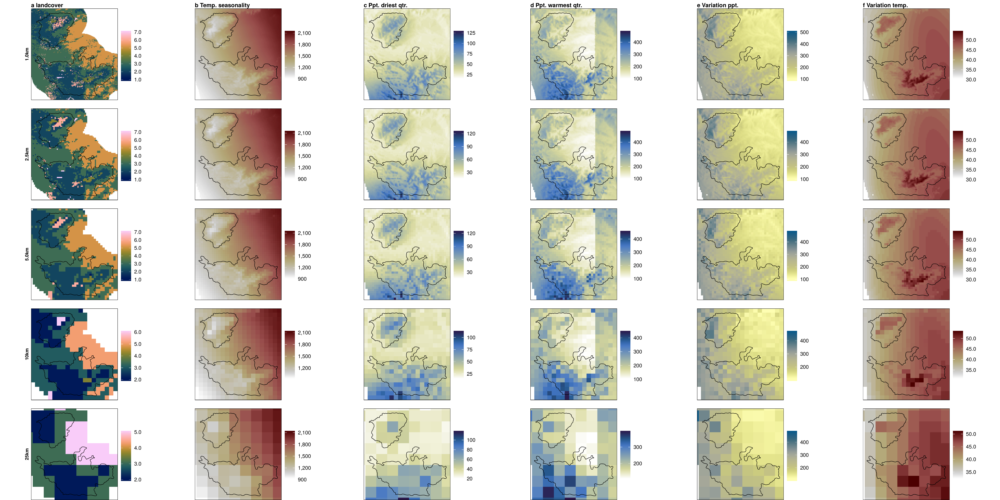

Section 9 Climatic raster resampling
9.1 Prepare landcover
# read in landcover raster location
landcover <- "data/landUseClassification/Reprojected Image_26thJan2020_UTM_Ghats.tif"
# get extent
e = bbox(raster(landcover))
# init resolution
res_init <- res(raster(landcover))
# res to transform to 1000m
res_final <- map(c(100, 250, 500, 1e3, 2.5e3), function(x){x*res_init})
# use gdalutils gdalwarp for resampling transform
# to 1km from 10m
for (i in 1:length(res_final)) {
this_res <- res_final[[i]]
this_res_char <- stringr::str_pad(this_res[1], 5, pad = "0")
gdalwarp(srcfile = landcover,
dstfile = as.character(glue('data/landUseClassification/lc_{this_res_char}m.tif')),
tr=c(this_res), r='mode', te=c(e))
}9.2 Prepare spatial extent
9.3 Prepare CHELSA rasters
# list chelsa files
chelsaFiles <- list.files("data/chelsa/", full.names = TRUE, pattern = "*.tif")
# gather chelsa rasters
chelsaData <- purrr::map(chelsaFiles, function(chr){
a <- raster(chr)
crs(a) <- crs(buffer)
a <- crop(a, as(buffer, "Spatial"))
return(a)
})
# stack chelsa data
chelsaData <- raster::stack(chelsaData)
names(chelsaData) <- c("chelsa_bio10_04", "chelsa_bio10_17", "chelsa_bio10_18","chelsa_prec", "chelsa_temp")9.4 Resample prepared rasters
# make resampled data
resamp_data <- map(lc_data, function(this_scale){
rr <- projectRaster(from = chelsaData, to = this_scale,
crs = crs(this_scale), res = res(this_scale))
})
# make a stars list
resamp_data <- map2(resamp_data, lc_data, function(z1,z2){
z2[z2 == 0] <- NA
z2 <- append(z2, as.list(z1)) %>% map(st_as_stars)
}) %>%
flatten()# colour palettes
pal <- c("batlow", "bilbao", "davos", "davos", "nuuk", "bilbao")
title <- c("a landcover",
"b Temp. seasonality",
"c Ppt. driest qtr.",
"d Ppt. warmest qtr.",
"e Variation ppt.",
"f Variation temp.")
title <- c(title, rep("", 24))
direction <- c(1,1,-1,-1,-1,1)
scales <- c(c("1.0km", rep("", 5)), c("2.5km", rep("", 5)),
c("5.0km", rep("", 5)), c("10km", rep("", 5)),
c("25km", rep("", 5)))
# make figures across the list
fig_list_chelsa_resamp <-
purrr::pmap(list(resamp_data, scales, rep(pal, 5), title, rep(direction, 5)),
function(df, scale, pal, t, d){
ggplot()+
geom_stars(data = df)+
geom_sf(data = hills, fill = NA, colour = "black", size = 0.3)+
scale_fill_scico(palette = pal, direction = d,
label = comma, na.value = NA)+
coord_sf(xlim = bbox[c("xmin", "xmax")],
ylim = bbox[c("ymin", "ymax")])+
theme_void()+
theme(#legend.position = "top",
panel.border = element_rect(),
title = element_text(face = "bold", size = 8),
# legend.key.height = unit(0.1, "cm"),
# legend.key.width = unit(0.6, "cm"),
# legend.text = element_text(size = 8),
axis.title = element_text(),
axis.title.y = element_text(angle = 90),
# axis.text.y = element_text(angle = 90, hjust = 0.5),
# panel.background = element_rect(fill = "lightblue"),
legend.title = element_blank())+
labs(x=NULL, y=scale, title = t)
})
fig_list_chelsa_resamp <- purrr::map(fig_list_chelsa_resamp, as_grob)
fig_chelsa_resamp <- grid.arrange(grobs = fig_list_chelsa_resamp, ncol=6)
ggsave(plot = fig_chelsa_resamp, filename = "figs/fig_chelsa_resamp.png", dpi = 100, width = 24, height = 12, device = png(), units = "in")
# use magick to convert
library(magick)
pl <- image_read_pdf("figs/fig_chelsa_resamp.pdf")
image_write(pl, path = "figs/fig_chelsa_resamp.png", format = "png")

(#fig:show_fig_chelsa_resamp)CHELSA rasters with study area outline, at different scales. Semivariograms are on a log-transformed y-axis.